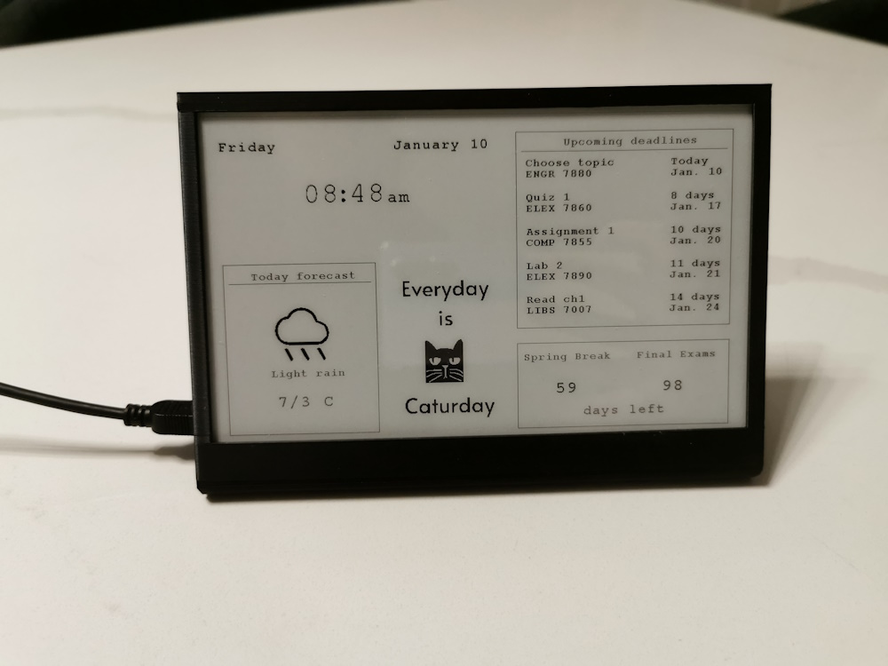

Overview
I love using the widgets on my phone but they get buried between the apps and pages. To solve that problem, I created Alertly; a smart e-paper screen that sits right on the desk and displays essential information: weather, calendar, to-do list, countdown designed to reduce digital distractions and increase focus. Alertly is powered by 7.5’’ e-paper display and ESP32 with built in WiFi, all programmed on Arduino IDE.
Concept
To reduce digital distractions, I included the following features:
- Display widgets: countdowns, to-do lists, calendar events, and weather updates in real time.
- Integrated real-time API data from Notion, OpenWeather, and other services via Wi-Fi for up-to-date information.
- ESP32-S3 and e-paper technology for always-on, energy-efficient display.
Achievements
- Built a WiFi-enabled e-paper display that shows real-time to-do lists, weather, and countdowns using APIs (Notion, OpenWeather).
- Selected components such as ESP32-S3 and e-paper based on power efficiency and Wi-Fi support to meet project requirements
- Designed 3D-printed enclosure using SolidWorks and PCB using EasyEDA for a polished finish.
- Programmed firmware in C++/Arduino to parse JSON data and update layout display.
Progress
Currently, Alertly enhances productivity by offering a calendar, to-do-list, weather and countdowns. Future plans include alarms with NeoPixel LEDs and encoder input.
